南アフリカ・ウースター1
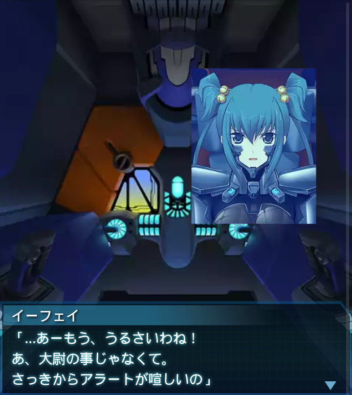
イーフェイ
「…あーもう、うるさいわね！
あ、大尉の事じゃなくて。
さっきからアラートが喧しいの」
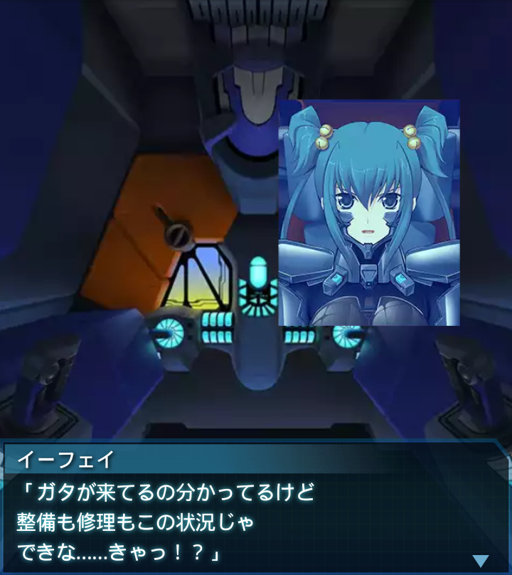
イーフェイ
「ガタが来てるの分かってるけど
整備も修理もこの状況じゃ
できな……きゃっ！？」
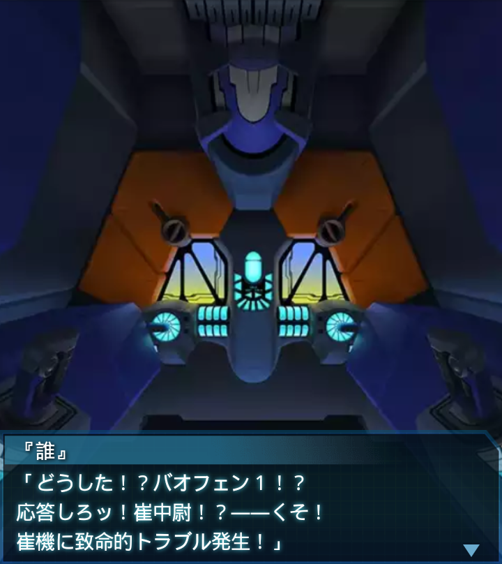
『誰』
「どうした！？バオフェン１！？
応答しろッ！崔中尉！？――くそ！
崔機に致命的トラブル発生！」
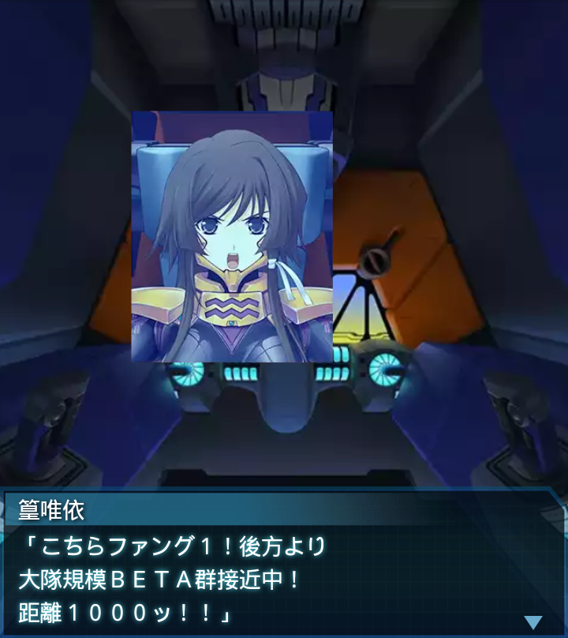
篁唯依
「こちらファング１！後方より
大隊規模ＢＥＴＡ群接近中！
距離１０００ッ！！」
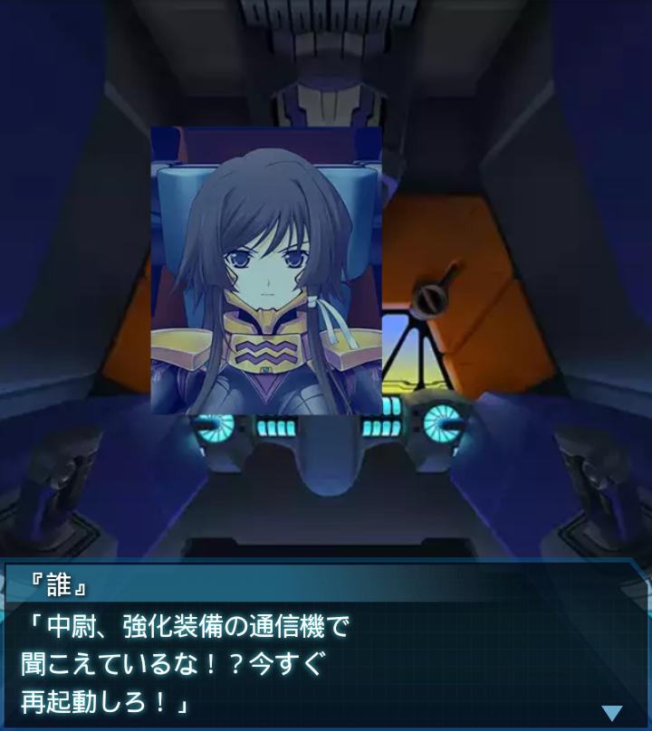
『誰』
「中尉、強化装備の通信機で
聞こえているな！？今すぐ
再起動しろ！」
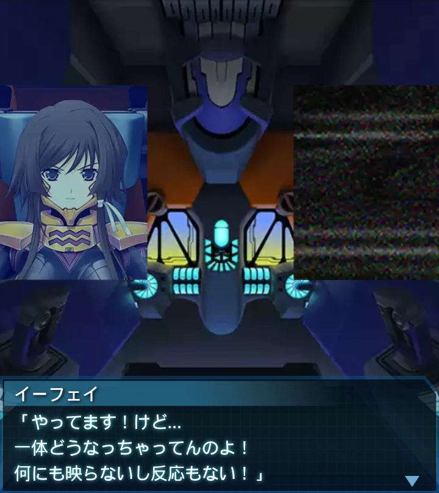
イーフェイ
「やってます！けど…
一体どうなっちゃってんのよ！
何にも映らないし反応もない！」
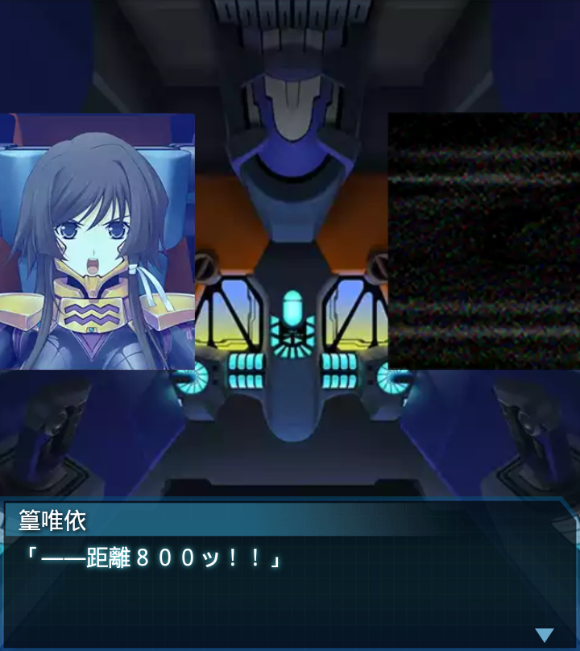
篁唯依
「――距離８００ッ！！」
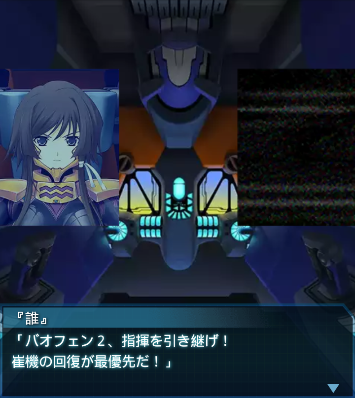
『誰』
「バオフェン２、指揮を引き継げ！
崔機の回復が最優先だ！」
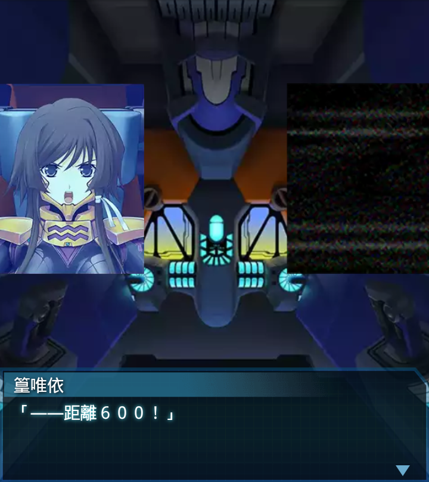
篁唯依
「――距離６００！」
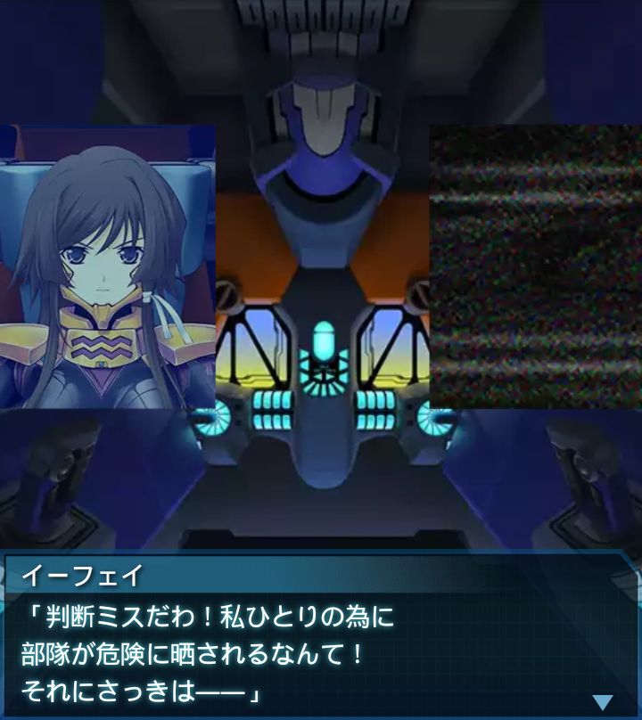
イーフェイ
「判断ミスだわ！私ひとりの為に
部隊が危険に晒されるなんて！
それにさっきは――」
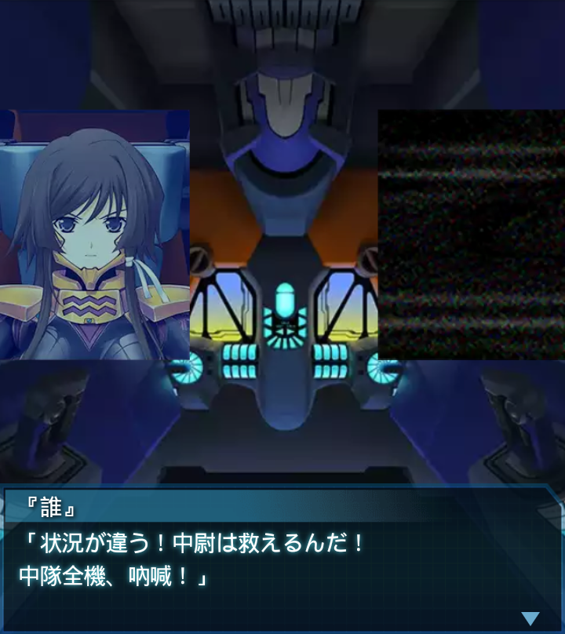
『誰』
「状況が違う！中尉は救えるんだ！
中隊全機、吶喊！」
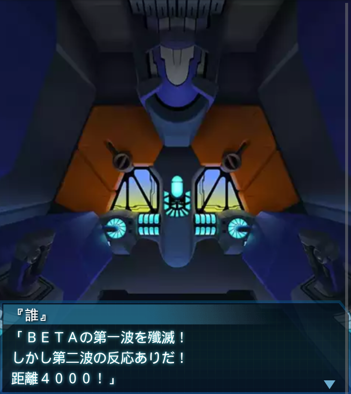
『誰』
「ＢＥＴＡの第一波を殲滅！
しかし第二波の反応ありだ！
距離４０００！」
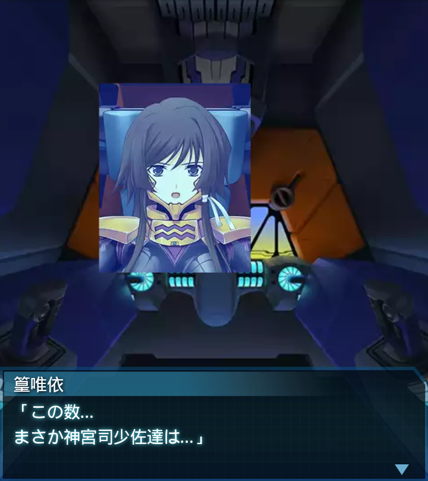
篁唯依
「この数…
まさか神宮司少佐達は…」
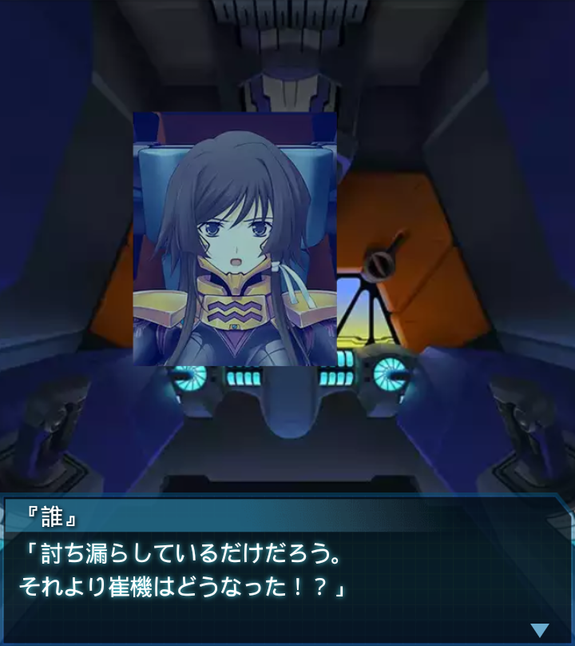
『誰』
「討ち漏らしているだけだろう。
それより崔機はどうなった！？」
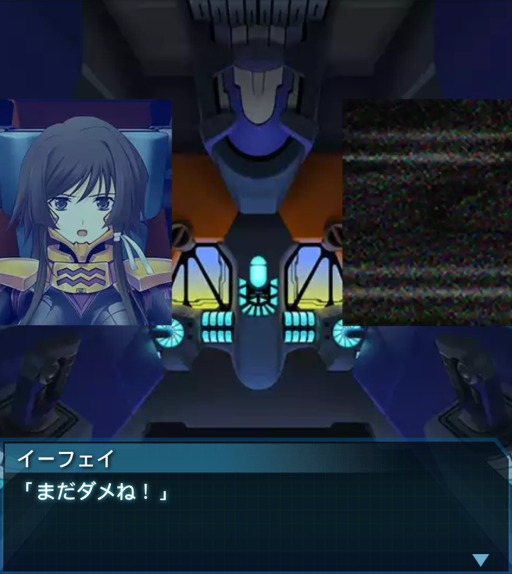
イーフェイ
「まだダメね！」
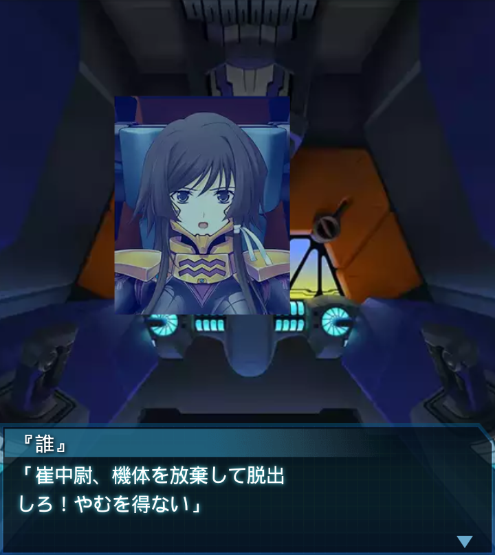
『誰』
「崔中尉、機体を放棄して脱出
しろ！やむを得ない」
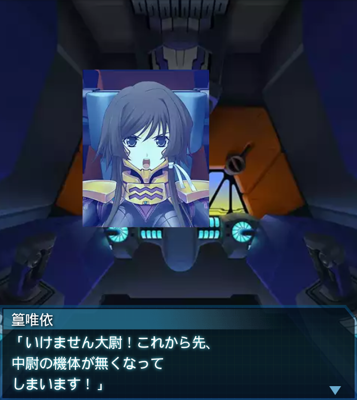
篁唯依
「いけません大尉！これから先、
中尉の機体が無くなって
しまいます！」
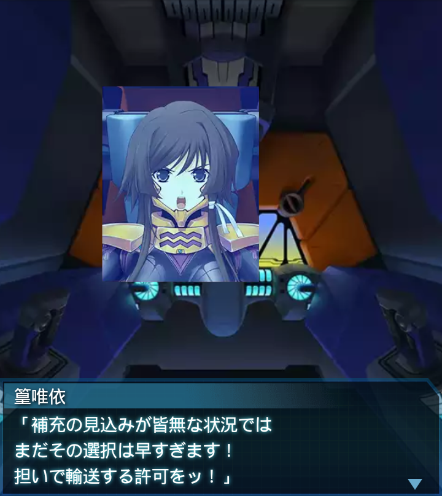
篁唯依
「補充の見込みが皆無な状況では
まだその選択は早すぎます！
担いで輸送する許可をッ！」